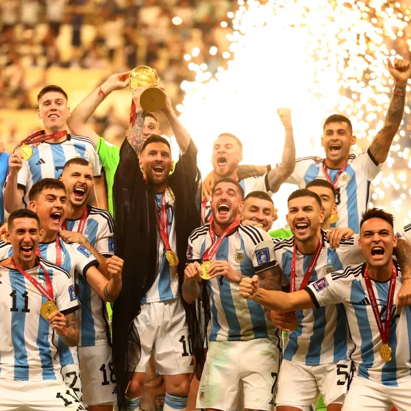

Homenaje a una leyenda
Un lugar para decir Gracias Leo!
Un muro colectivo donde hinchas de todo el mundo dejan su mensaje de agradecimiento a Lionel Messi.

Una carrera en imágenes
Momentos destacados
La carrera de Leo
En números
Récords
Títulos y estadísticas

Tu turno
Él nos dio esta alegría. Ahora te toca a vos.
Esa noche en Qatar, millones de personas lloraron, se abrazaron y gritaron como nunca. Si alguna vez Leo te hizo feliz, contáselo: tu mensaje se suma al muro junto al de hinchas de todo el mundo.